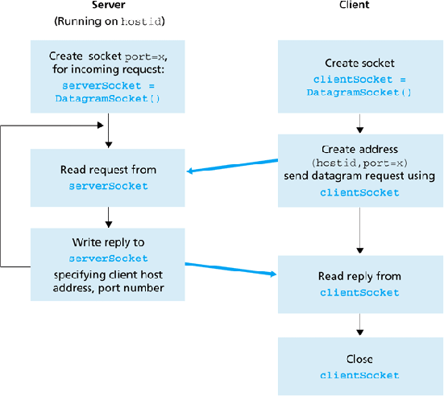

Unidad 4. Programación en red: Sockets UDP
Índice
Sockets UDP
Comunicación cliente/servidor con sockets UDP
Igual que en el apartado anterior, Oracle proporciona una guía son información básica sobre el uso de los Sockets UDP. De nuevo, todo lo que podemos ver en ese tutorial lo vamos a ir comentando y ampliando en este apartado del tema
Tutorial de Oracle: All about datagrams
UDP - Protocolo sin conexión
El protocolo de comunicaciones con datagramas UDP, es un protocolo sin conexión, es decir, cada vez que se envíen datagramas es necesario enviar el descriptor del socket local y la dirección del socket que debe recibir el datagrama. Como se puede ver, hay que enviar datos adicionales cada vez que se realice una comunicación.
Se trata de un servicio de transporte sin conexión. Son más eficientes que TCP, pero no está garantizada la fiabilidad: los datos se envían y reciben en paquetes, cuya entrega no está garantizada; los paquetes pueden ser duplicados, perdidos o llegar en un orden diferente al que se envió.
La interfaz Java que da soporte a sockets TCP está constituida por las clases DatagramPacket y DatagramSocket.
-
DatagramSocket: es la clase utilizada para realizar el envío y la recepción de los datos. A diferencia de los sockets TCP, esta clase no es la encargada de gestionar las direcciones ni de realizar la conexión, sólo se encarga de transportar los datos del origen al destino.
Lo único que se hace es enviar los datos, mediante la creación de un socket y utilizando los métodos de envío y recepción apropiados.
Esta clase proporciona los métodos
sendyreceive. -
DatagramPackets: esta clase es la encargada de incluir la información que se quiere enviar/recibir y la información de direccionamiento, es decir, la dirección a la que se quiere enviar l información que contiene.
DatagramPacket contiene la información relevante. Cuando se desea recibir un datagrama, éste deberá almacenarse bien en un buffer o un array de bytes. Y cuando preparamos un datagrama para ser enviado, el DatagramPacket no sólo debe tener la información, sino que además debe tener la dirección IP y el puerto de destino.
Puertos duplicados UDP / TCP
Dado que la gestión de los puertos y el protocolo que se utiliza es diferente, podemos usar el mismo número de puerto para un servicio que use el protocolo TCP y otro servicio, en el mismo puerto, que use UDP.
En realidad, un socket además de IP_origen, Puerto_origen, IP_destino, Puerto_destino, también incluye el protocolo usado, por eso un socket con el mismo origen y destino, es diferente y puede ser usado a al vez por UDP y TCP
Socket = [Protocolo (TCP/UDP) + IP_origen + Puerto_origen + IP_destino + Puerto_destino]
DatagramSocket
Esta clase proporciona los siguiente métodos
| Método | Descripción |
|---|---|
| public DatagramSocket () throws SocketException | Se encarga de construir un socket para datagramas y de conectarlo al primer puerto disponible. |
| public DatagramSocket (int port) throws SocketException | Ídem, pero con la salvedad de que permite especificar el número de puerto asociado. |
| public DatagramSocket (int port, InetAddress ip) throws SocketException | Permite especificar, además del puerto, la dirección local a la que se va a asociar el socket. |
| public int getLocalPort() | Retorna el número de puerto en el host local al que está conectado el socket. |
| public void receive (DatagramPacket p) throws IOException | Recibe un DatagramPacket del socket, y llena el buffer con los datos que recibe. |
| public void send (DatagramPacket p) throws IOException | Envía un DatagramPacket a través del socket. |
| public setSoTimeout(int timeout) | Permite establecer un tiempo de espera límite para que el método receive se quede bloqueado esperando a recibir una respuesta por parte del otro extremo. Si no reciben datos en el tiempo fijado se lanza la excepción InterruptedIOException |
El DatagramSocket, cuando se utiliza en la parte receptora (la que vamos a llamar servidora) que ofrece el servicio para que los clientes se conecten, sólo va a indicar el puerto al que esos clientes deben enviar sus solicitudes. En el caso de los procesos que actúen como clientes, se usará el constructor sin parámetros para que sea el SO el que asigne un puerto libre.
Por lo tanto, un mismo DatagramSocket al no incluir ninguna información de direccionamiento puede ser reutilizado para enviar y/o recibir datagramas a/desde diferentes destinos.
DatagramPacket
La clase DatagramPacket como se ha indicado anteriormente, es un contenedor del mensaje y del destino de ese mensaje.
![Datagram Packet]()
Esta clase proporciona los siguiente métodos
| Método | Descripción |
|---|---|
| public DatagramPacket(byte ibuf[], int ilength) | Implementa un DatagramPacket para la recepción de paquetes de longitud ilength, siendo el valor de este parámetro menor o igual que ibuf.length. |
| public DatagramPacket(byte ibuf[], int ilength, InetAddress iaddr, int iport) | Implementa un DatagramPacket para el envío de paquetes de longitud ilength al número de puerto especificado en el parámetro iport, del host especificado en la dirección de destino que se le pasa por medio del parámetro iaddr. |
| public InetAddress getAddress () | Retorna la dirección IP del host al cual se le envía el datagrama o del que el datagrama se recibió. |
| public byte[] getData() | Retorna los datos a recibir o a enviar. |
| public int getLength() | Retorna la longitud de los datos a enviar o a recibir. |
| public int getPort() | Retorna el número de puerto de la máquina remota a la que se le va a enviar el datagrama o del que se recibió. |
Como se intuye de la descripción de los métodos, la forma de crear el datagrama va a depender de si queremos enviar o recibir la información, ya que en cada uno de estas acciones tendremos que indicar dónde van dirigidos esos datos (envío) o bien esa información ya vendrá incluida en el datagrama (recepción) y podremos acceder a ella a través de los métodos getter de la clase.
Es importante hacer ver que la información debe enviarse como un array de bytes y que se recibe de la misma forma, por lo que tendremos que usar los métodos de String o de cualquiera de los otros tipos primitivos de Java para convertirlos a bytes.
Programación de aplicaciones Cliente y/o Servidor
En el caso de aplicaciones UDP, el protocolo de comunicación no tiene sentido a nivel de capa de transporte, ya que sólo se envían y reciben mensajes y hablamos de un protocolo no orientado a conexión, por lo tanto no sirve para realizar confirmaciones o diálogos entre la parte servidora y cliente.
La parte del protocolo se delega en una capa superior, que será la encargada de gestionar la comunicación a un nivel de abstracción mayor.
De todas formas, la comunicación entre ambas partes debe seguir estando sincronizada en los que a envíos / respuestas se refiere para no dejar a la otra parte bloqueada en las lecturas.
Bloqueo de lecturas con timeout
Esta característica, también disponible para los sockets TCP, permite evitar un bloqueo infinito de un hilo a la espera de recibir datos del otro extremo del socket.
Es de especial importancia en la gestión de las comunicaciones UDP ya que, como hemos dicho, no tienen porqué seguir un protocolo preestablecido a nivel de transporte.
Con el método setSoTimeout de DatagramSocket podemos fijar un tiempo de espera máximo para la recepción de datos a través del socket.
4.3.2. Cliente UDP
Si nos centramos en la parte de comunicaciones, la forma general de implementar un cliente será:
- El cliente creará un socket para comunicarse con el servidor. Para enviar datagramas necesita conocer su IP y el puerto por el que escucha.
- Utilizará el método send() del socket para enviar la petición en forma de datagrama.
- La información se envia en un objeto de tipo DatagramPacket
- El DatagramPacket almacena el contenido del mensaje en un array de bytes
- Permanece a la espera de recibir respuesta
- El cliente recibe la respuesta del servidor mediante el método receive() del socket.
- La información se recibe en un objeto de tipo DatagramPacket
- El DatagramPacket almacena el contenido del mensaje en un array de bytes
- Cerrar y liberar los recursos.
public class BasicUDP_Client { public static void main(String[] argv) throws Exception { // IP y puerto al que se envía el Datagrama InetAddress destino = InetAddress.getLocalHost(); int port = 12345; // Buffer para recibir el datagrama byte[] buffer = new byte[1024]; // El mensaje a enviar en el Datagrama se convierte a bytes String mensajeEnviado = "Enviando Saludos !!"; buffer = mensajeEnviado.getBytes(); //codifico String a bytes // Se preparara el DatagramPacket que se va a enviar DatagramPacket datagramaEnviado = new DatagramPacket(buffer, buffer.length, destino, port); // En este caso, especificamos un puerto, aunque podríamos dejarlo para // que el SO asigne uno libre DatagramSocket socket = new DatagramSocket(34567); System.out.println("Host destino : " + destino.getHostName()); System.out.println("IP Destino : " + destino.getHostAddress()); System.out.println("Puerto local del socket: " + socket.getLocalPort()); System.out.println("Puerto al que envio: " + datagramaEnviado.getPort()); // Envío del Datagrama socket.send(datagramaEnviado); // Cierre y liberación de recursos socket.close(); } }
Servidor UDP
En los sockets UDP no se establece conexión. A pesar de que cuando los programamos sí existen diferencias entre el servidor y el cliente, estas no son tan claras como con los sockets TCP. La funcionalidad y el código que diferencia a un servidor de un cliente está más diluido.
Podemos considerar servidor al que espera un mensaje y responde; y cliente al que inicia la comunicación.
Tanto uno como otro si desean ponerse en contacto necesitan saber en qué ordenador y en qué puerto está escuchando el otro.
- El servidor crea un socket asociado a un puerto local para escuchar peticiones de clientes.
- Permanece a la espera de recibir peticiones.
- El servidor recibe las peticiones mediante el método receive() del socket.
- La información se recibe en un objeto de tipo DatagramPacket
- El DatagramPacket almacena el contenido del mensaje en un array de bytes
- En el datagrama recibido va incluido además del mensaje, el puerto y la IP del cliente emisor de la petición; lo que le permite al servidor conocer la dirección del emisor del datagrama. Utilizando el método send() del socket puede enviar la respuesta al cliente emisor.
- El servidor permanece a la espera de recibir más peticiones.
- Cerrar y liberar los recursos.
public class BasicUDP_Server { public static void main(String[] argv) throws Exception { // Buffer para recibir el datagrama byte[] bufer = new byte[1024]; // El Socket del servidor se asocia a un puerto para que los clientes // puedan enviar peticiones. DatagramSocket socket = new DatagramSocket(12345); // Se espera la llegada de un DATAGRAMA // Al igual que con TCP, esta llamada a receive es bloqueante // y es la que tiene que marcar la sincronización entre lecturas y // escrituras de las app cliente / servidor System.out.println("Esperando Datagrama ................"); // Se crea el objeto que almacenará el mensaje enviado por el cliente DatagramPacket datagramaRecibido = new DatagramPacket(bufer, bufer.length); // Se espera el mensaje y se le pasa el datagrama para que lo almacene ahí socket.receive(datagramaRecibido); String mensajeRecibido = new String(datagramaRecibido.getData()); //Información recibida System.out.println("Número de Bytes recibidos: " + datagramaRecibido.getLength()); System.out.println("Contenido del Paquete : " + mensajeRecibido.trim()); System.out.println("Puerto origen del mensaje: " + datagramaRecibido.getPort()); System.out.println("IP de origen : " + datagramaRecibido.getAddress().getHostAddress()); System.out.println("Puerto destino del mensaje:" + socket.getLocalPort()); // Liberamos los recursos socket.close(); } }
Quedando la secuencia de acciones entre el cliente y el servidor de la siguiente manera

Veamos ahora un ejemplo completo de C/S UDP
public class BasicUDP_Client2 {
public static void main(String args[]) throws Exception {
// FLUJO PARA ENTRADA ESTANDAR
BufferedReader in = new BufferedReader(new InputStreamReader(System.in));
DatagramSocket clientSocket = new DatagramSocket();
byte[] enviados = new byte[1024];
byte[] recibidos = new byte[1024];
// DATOS DEL SERVIDOR al que enviar mensaje
InetAddress IPServidor = InetAddress.getLocalHost();// localhost
int puerto = 9876; // puerto por el que escucha
// INTRODUCIR DATOS POR TECLADO
System.out.print("Introduce mensaje: ");
String cadena = in.readLine();
enviados = cadena.getBytes();
// ENVIANDO DATAGRAMA AL SERVIDOR
System.out.println("Enviando " + enviados.length + " bytes al servidor.");
DatagramPacket envio = new DatagramPacket(enviados, enviados.length, IPServidor, puerto);
clientSocket.send(envio);
// RECIBIENDO DATAGRAMA DEL SERVIDOR
DatagramPacket recibo = new DatagramPacket(recibidos, recibidos.length);
System.out.println("Esperando datagrama....");
clientSocket.receive(recibo);
String mayuscula = new String(recibo.getData());
// OBTENIENDO INFORMACIÓN DEL DATAGRAMA
InetAddress IPOrigen = recibo.getAddress();
int puertoOrigen = recibo.getPort();
System.out.println("\tProcedente de: " + IPOrigen + ":" + puertoOrigen);
System.out.println("\tDatos: " + mayuscula.trim());
//cerrar socket
clientSocket.close();
}
}
public class BasicUDP_Server2 {
public static void main(String args[]) throws Exception {
//Puerto por el que escucha el servidor: 9876
DatagramSocket serverSocket = new DatagramSocket(9876);
byte[] recibidos = new byte[1024];
byte[] enviados = new byte[1024];
String cadena;
while (true) {
System.out.println("Esperando datagrama.....");
//RECIBO DATAGRAMA
recibidos = new byte[1024];
DatagramPacket paqRecibido = new DatagramPacket(recibidos, recibidos.length);
serverSocket.receive(paqRecibido);
cadena = new String(paqRecibido.getData());
//DIRECCION ORIGEN
InetAddress IPOrigen = paqRecibido.getAddress();
int puerto = paqRecibido.getPort();
System.out.println("\tOrigen: " + IPOrigen + ":" + puerto);
System.out.println("\tMensaje recibido: " + cadena.trim());
//CONVERTIR CADENA A MAYÚSCULA
String mayuscula = cadena.trim().toUpperCase();
enviados = mayuscula.getBytes();
//ENVIO DATAGRAMA AL CLIENTE
DatagramPacket paqEnviado = new DatagramPacket(enviados, enviados.length, IPOrigen, puerto);
serverSocket.send(paqEnviado);
// Condición de finalización
if (cadena.trim().equals("*")) {
break;
}
}//Fin de while
serverSocket.close();
System.out.println("Socket cerrado...");
}
}
Multicast socket
La clase MulticastSocket es útil para enviar paquetes a múltiples destinos simultáneamente.
Para poder recibir estos paquetes es necesario establecer un grupo multicast, que es un grupo de direcciones IP que comparten el mismo número de puerto.
Cuando se envía un mensaje a un grupo de multicast, todos los que pertenezcan a ese grupo recibirán el mensaje.
La pertenencia al grupo es transparente al emisor, es decir, el emisor no conoce el número de miembros del grupo ni sus direcciones IP.
Grupo multicast
Un grupo multicast se especifica mediante una dirección IP de clase D y un número de puerto UDP estándar.
Las direcciones desde la 224.0.0.0 a la 239.255.255.255 están destinadas para ser direcciones de multicast.
La dirección 224.0.0.0 está reservada y no debe ser utilizada.
Los métodos que proporciona la clase MulticastSocket son
| Método | Descripción |
|---|---|
| MulticastSocket() throws IOException | Construye un socket multicast dejando al SO que asigne un puerto libre. |
| MulticastSocket(int port) throws IOException | Construye un socket multicast y lo conecta al puerto local especificado. |
| public void receive (DatagramPacket p) throws IOException | Recibe un DatagramPacket del socket, y llena el buffer con los datos que recibe. |
| public void send (DatagramPacket p) throws IOException | Envía un DatagramPacket a través del socket. |
| joinGroup( InetAddress multicastAddress) | Permite al socket unirse al grupo de multicast. A partir de ese momento podrá recibir los mensajes que se envían a esa dirección. Un MulticastSocket puede estar unido a más de un grupo multicast. |
| leaveGroup( InetAddress multicastAddress) | Permite al socket abandonar el grupo de multicast |
Y a continuación presentamos el esquema de llamadas seguido por un servidor multicast
-
Se crea el socket multicast. No hace falta especificar puerto
MulticastSocket ms = new MulticastSocket();
-
Se define el puerto multicast
int Puerto = 12345;
-
Se crea el grupo multicast
InetAddress grupo = InetAddress.getByName(“225.0.0.1”);
-
Se crea el datagrama
DatagramPacket paquete = new DatagramPacket(msg.getBytes(), msg.length(), grupo, Puerto);
-
Se envía el paquete al grupo
ms.send(paquete);
-
Se cierra el socket
ms.close();
y el esquema de llamadas seguido por un cliente multicast
-
Se crea un socket multicast en el puerto establecido
MulticastSocket ms = new MulticastSocket(12345);
-
Se configura la IP del grupo al que nos conectaremos
InetAddress grupo = InetAddress.getByName(“225.0.0.1”);
-
Se une al grupo
ms.joinGroup(grupo);
-
Recibe el paquete del servidor multicast
byte[] buf = new byte[1000];
DatagramPacket recibido = new DatagramPacket(buf, buf.length);
ms.receive(recibido); -
Salimos del grupo multicast:
ms.leaveGroup(grupo);
-
Se cierra el socket
ms.close();
Y ahora lo vemos todo junto con un ejemplo
public class U4_BasicMulticastServer {
public static void main(String args[]) throws Exception {
// Enviamos la información introducida por teclado hasta que se envíe un *
Scanner in = new Scanner(System.in);
//Se crea el socket multicast.
MulticastSocket ms = new MulticastSocket();
// Se escoge un puerto para el server
int puerto = 12345;
// Se escoge una dirección para el grupo
InetAddress grupoMulticast = InetAddress.getByName("225.0.0.1");
String cadena = "";
while (!cadena.trim().equals("*")) {
System.out.print("Datos a enviar al grupo: ");
cadena = in.nextLine();
// Enviamos el mensaje a todos los clientes que se hayan unido al grupo
DatagramPacket paquete = new DatagramPacket(cadena.getBytes(), cadena.length(), grupoMulticast, puerto);
ms.send(paquete);
}
// Cerramos recursos
ms.close();
System.out.println("Socket cerrado...");
}
}
public class U4_BasicMulticastClient {
public static void main(String args[]) throws Exception {
//Se crea el socket multicast
// El puerto debe ser el mismo en todos los clientes, ya que el
// servidor multicast envía la información a la IP multicast y a un puerto
int puerto = 12345;//Puerto multicast
MulticastSocket ms = new MulticastSocket(puerto);
//Nos unimos al grupo multicast
InetAddress grupo = InetAddress.getByName("225.0.0.1");
ms.joinGroup(grupo);
String msg = "";
while (!msg.trim().equals("*")) {
// El buffer se crea dentro del bucle para que se sobrescriba
// con cada nuevo mensaje
byte[] buf = new byte[1000];
DatagramPacket paquete = new DatagramPacket(buf, buf.length);
//Recibe el paquete del servidor multicast
ms.receive(paquete);
msg = new String(paquete.getData());
System.out.println("Recibo: " + msg.trim());
}
// Abandonamos grupo
ms.leaveGroup(grupo);
// Cerramos recursos
ms.close();
System.out.println("Socket cerrado...");
}
}
Mezcla de sockets en una app
Ya hemos visto todo el abanico de posibilidades que tenemos para comunicar dos procesos en red.
A partir de este momento, en nuestras aplicaciones no sólo tenemos que elegir uno de ellos, sino que podemos tener varios sockets, de diferente tipo, para comunicar los clientes y los servidores.
Se trata ahora de analizar en qué situación es más conveniente un tipo que otro y usarlo. Podemos ayudarnos de la creación de hilos que estén "especializados" en el envío y/o recepción de información de un socket, permitiendo que se intercambien varios mensajes a la vez.